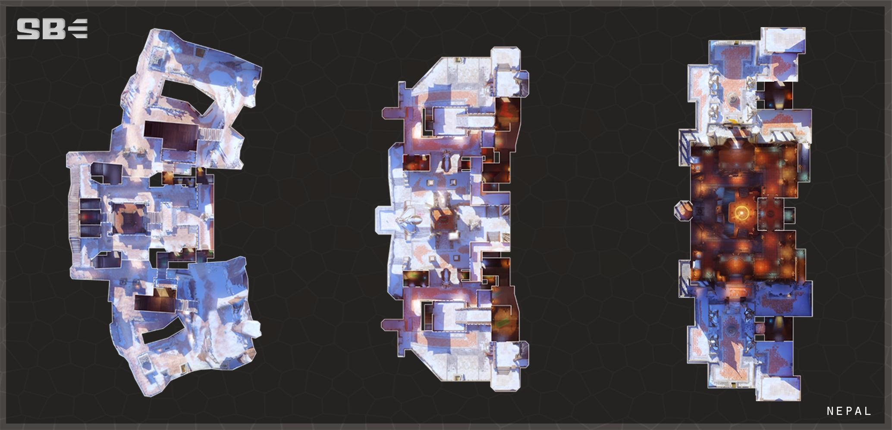

尼泊爾 Nepal
回首頁
Your browser does not support the audio element.
多
年前，一群智械機器人經歷了他們所謂的精神覺醒。他們放 棄了他們的程序化生活，在喜馬拉雅山脈建立了一座修道院 ，那裡有志同道合的智械可以聚集在一起思考他們存在的本 質。在他們的精神領袖泰哈薩‧蒙達塔的帶領下，他們接管了 一座古老修道院的廢墟，並將其變成了香巴里的家園，這裡 是一個智械和人類朝聖的地方，希望能找到更真實的真理。



 回首頁
回首頁